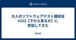

天の月
https://aki-m.hatenadiary.com/
ソフトウェア開発をしていく上での悩み, 考えたこと, 学びを書いてきます(たまに関係ない雑記も)
フィード

アジャイルカフェ@オンライン 第57回に参加してきた
天の月
agile-studio.connpass.com こちらのイベントに参加してきたので、会の様子と感想を書いていこうと思います。 会の概要 会の様子 コンテキストの確認 不安の原因 説得することで得たいものはなんだろう？ 上手に説得(説明)するコツ 会全体を通した感想 会の概要 アジャイルコーチの木下さん、家永さん、天野さんのお三方がアジャイル実践者からの悩みに対して色々な角度で回答をしていくイベントです。 今回のテーマは、「過去に成功したチームと同じことをしていないと不安なマネージャを説得するにはどうしたら良いですか？」でした。 会の様子 コンテキストの確認 まず、話のコンテキストとして、 …
1日前

QAと開発チームの連携どうしてる？〜品質文化醸成の取り組み編〜に参加して
天の月
findy.connpass.com こちらのイベントに参加してきたので、会の様子と感想を書いていこうと思います。(時間の関係でラスト15分は抜けました) 会の概要 会の様子 ワンチームで勝つ：QAとエンジニアの協業を超えた連携の実践例 品質富士山 サービス品質を向上させるための取り組み プロダクト品質を向上させるための取り組み プロセス品質を向上させるための取り組み 組織品質を向上させるための取り組み 大事にしていること (質問) スクラムの中でQAはメンバーとしてどんなことをしているのか？ (質問) QAと開発がリモートで物理的に壁がある場合どのようにコミュニケーションをするのか？ 品質の…
1日前

オブジェクト指向のこころを読む会 Vol28に参加してきた
天の月
yr-camp.connpass.com 今週もこちらのイベントに参加してきたので、会の様子と感想を書いていこうと思います。 再帰と反復 なぜn^3になるのか？ メモ化 全体を通した感想 再帰と反復 反復は再帰と比較して、TCOを使うなどスタックフレームを節約することができるし、計算量も減るため、(メモ化などを使わない場合は)高速であるという話を確認していきました。 確認は、実際にコードレベルで書いてみて、(メモ化などを使わない)再帰のほうが処理がどうしても多くなってしまうよね、というのを考えていきました。 再帰(factorial 6)=(* 6 (factorial 5))=(* 6 (*…
2日前

大人のソフトウェアテスト雑談会 #224【その気になれば】に参加してきた
天の月
ost-zatu.connpass.com 今週もテストの街葛飾に行ってきたので、会の様子と感想を書いていこうと思います。 FAST プロダクトのゆるやかな死 スーパーPdM BeReal LINE VS Webアプリ 全体を通した感想 FAST LeSSやScrum@Scaleといったやり方も候補に挙がる中FASTを採用したのは、少なくとも日本では誰もやっていないから楽しそうだという理由で採用したという話がありました。 色々本を読んでどれどれと様子を見ながらやるのも面白いけれど、誰もやったことがなくてリファレンスも何もないようなことをやっていくのが一番おもしろいというお話がありました。 また…
3日前

スクラムフェスバンパク(一応仮称)を開催します 2
2
天の月
タイトルの通り、スクラムフェスバンパクという名のスクラムフェスを開催したいと思っているので、今日はその告知になります！ 日程 どういう場なのか？ 開催経緯 名付けの経緯 おわりに 日程 スクラムフェス大阪の日程にもよるので確定ではないのですが、2025/6/6〜2025/6/7に開催しようと思っています。 どういう場なのか？ 以下のような目的を掲げる場にしたいと思います。 地域を通して、アジャイル・スクラムの実践者、これから実践しようとしている人たち同士の強いつながりを作る 地域同士がオンラインを通して繋がり、アジャイル・スクラムの知見を集積するような場を作る アジャイル、スクラムについての知…
4日前

「脱！なんちゃってスクラム」実践事例から学ぶ Lunch LTに参加してきた
天の月
findy.connpass.com こちらのイベントに参加してきたので、会の様子と感想を書いていこうと思います。 会の概要 会の様子 1人だけ知ってても回らないスクラム 現職と前職で感じたスクラムの違い スクラムの成熟と壁 〜スケーリングの議論から見えたもの〜 300人の組織でスクラムを運用するための考え方 会全体を通した感想 会の概要 以下、イベントページから引用です。 アジャイル開発の１つのフレームワークであるスクラム。昨今では、アジャイルコーチやスクラムマスターの役割も一般的になりつつあり、実際に取り組む組織も多くなっています。その一方で、「スクラムを実践しているがあまり上手くいってい…
5日前

スクラムフェス金沢のふりかえり番外編(キャッシュフロー更新)をしてきた
天の月
www.scrumfestkanazawa.org 今日はスクラムフェス金沢のふりかえり番外編(キャッシュフロー更新)をしてきたので、その様子と感想を書いていきます。 本ブログの注意事項 予算の更新 どこに予算を使っていくといいのか？ 本ブログの注意事項 キャッシュフロー更新をしたのですが、キャッシュフローの詳細は一般の人は見えないようになっているため、具体的な金額や内訳など具体的な内容に関してはブログで触れないようにします。 具体的な金額や内訳が分かるからこそ学びになったり、カンファレンス運営の考え方につながる部分もあったりするので、もしそういう内容に興味がある方は、どこかしらのカンファレン…
6日前
スクラムフェス三河で登壇できることになりました
天の月
タイトルの通り、スクラムフェス三河で登壇できることになったので今日はその告知です。 confengine.com 概要 Accept通知を見たときの心境 今回チャレンジしたいこと 意気込み 概要 本セッションでは、ソフトウェア工学に新たなページを作ろうとしている47機関というチームにjoinして約2年間が経った自分が、この2年間で見てきたものややってきたことを紹介することで、プロダクト開発に取り組んでいるみなさんが当たり前だと思っていることを今一度捉え直せることを目指します。 Accept通知を見たときの心境 今回のスクラムフェス三河は例年に比べてかなり登壇数を絞りたい(オンライントラックを減…
7日前
「スタートアップにおける組織設計とスクラムの長期戦略」を深掘りに参加してきた
天の月
distributed-agile-team.connpass.com こちらのイベントに参加してきたので、会の様子と感想を書いていこうと思います。(セッションの同時視聴→感想戦という流れで、自分は感想戦だけ参加していました) チーム開発だと個人単位の評価が難しいのはなぜか？ 上司ガチャへの対応 マネージャーが他人を評価するための教育 評価とフィードバック よしきさんの取り組みとエンジニアを増やす取り組みはコンフリクトしているのか？ 新しい価値観の浸透のさせ方 全体を通した感想 チーム開発だと個人単位の評価が難しいのはなぜか？ きょんさんは個人単位の評価はできると思っている上に、なぜチーム開発…
8日前
2024年7月のふりかえり
天の月
7月が終わったのでいつも通りふりかえりをしていきます。 月のふりかえり 仕事 社外活動/自己研鑽 プライベート 一年でやりたいことに対してのふりかえり 翻訳 登壇(プロポーザル) コミュニティを立ち上げる 続けていることに関して何かしらの単位を変える 1年間運動を継続する 国際カンファレンスに参加 月のふりかえり 仕事 今月は一つの山場だったため、先月以上に忙しかったです。 仕事自体はそこまで新しい仕事というのはなく、作業量に忙殺されるやや危ないパターンに陥りかけていましたが、今まで自分の周りだけで取り組んでいたことに関して、業界におけるベンチマークだったりを知れて、自分が取り組んできた環境が…
9日前

大人のソフトウェアテスト雑談会 #223【下から見るか】に参加してきた
天の月
ost-zatu.connpass.com 今週もテストの街葛飾に行ってきたので、会の様子と感想を書いていこうと思います。 まさかり 翻訳 ドメイン駆動設計をはじめようの翻訳 全体を通した感想 まさかり カンファレンスでまさかりが飛んでいて不愉快な思いをした参加者がいたという自分のブログ記事から、具体的にどういう発言に対してどういう理由で不愉快に感じたのか？がないと、議論が難しいという話をしていきました。 行動規範に反しているコメント(例えば登壇者に対して「容姿がかわいい」というなど)に関してはわかりやすいけれど、それ以外はグレーなものなので、そういうマサカリに対して耐性がないような人には反論…
10日前
学習科学・教育心理学はこれからの学校教育に何をもたらすか——令和の日本型学校教育の実現に向けて 『人はいかに学ぶのか』刊行記念オンラインイベントに参加してきた
天の月
https://kitaohji08.peatix.com/ こちらのイベントに途中まで参加して後半部分をアーカイブで視聴したので、会の様子と感想を書いていこうと思います。 会の概要 会の様子 訳者紹介 20年間で変わった部分 本書の魅力 自分で課題解決できる子供の育て方がわかる GIGA端末やデジタルテクノロジーの賛否両論がある どこからでも読める 人の強みがわかる 既存の常識の転換 伝統的な学習心理学 バイアス研究の進展 読解研究の進展 人に優しい心理学とは 具体的な教育デザイン 学習とアイデンティティ形成 教育心理学者 教育心理学と教科教育の融合 学校教育である時間の有限性 学習に取り組…
11日前
地域コミュニティを活性化させるような場を作っていきたい
天の月
先日こんなTweetをしました。 ということで、ここ数年の #scrumosaka の場を再現できるような場を新しく作りたいなあという気持ちが強くなったのでしたどういう形がいいのかとかは全くアイデアないし、自分のキャパ不足もあってあんまりできる自信がないんだけれど、何とかなる気もしているので笑、その内動こうと思いますー — aki.m (@Aki_Moon_) 2024年7月22日 そして、この趣旨に興味があると思ってくださった皆さんと一緒に、第0回を行ってきたので、会の様子と感想を書いていこうと思います。 コンテキストの説明 自己紹介 スクラムフェス大阪の良かったところ 次回以降の日程決め …
12日前
スクラムフェス金沢のスタッフふりかえりをしてきた
天の月
www.scrumfestkanazawa.org 今日はスクラムフェス金沢のスタッフふりかえりをしてきたので、その様子と感想を書いていきます。 来年も続けたいこと 来年変えたいこと 会場を変えたい Discordのマサカリが酷くて不快だった 地元参加枠がもっと欲しかった 予算繰りのふりかえり&チケットは高かった？ OSTでばたついた 次にいつ集まるか？ 全体を通した感想 来年も続けたいこと 来年もKeepしていきたい要素として、 司会交代 会場費の安さ カンバンを使ったタスク管理 飲み会ボードを使ったサインアップ制度 1,2日のボリューム モニターにDiscordのチャンネルが表示 といった…
13日前

スクラムフェス金沢のスタッフふりかえり
天の月
www.scrumfestkanazawa.org 少し時間が経ってしまいましたが、スクラムフェス金沢にスタッフとして参加したふりかえりをしていこうと思います。 運営として関与することを決めるまで 準備期間 なんでスクラムフェス金沢を開催するんだろう？ 金沢に遊びに行く 川口さんとモブワークでHP公開 セッション決めを通して生まれたもやもやと意見の対立があったからこそ見えてきた大切にしたいこと オーガナイザーの集いでみなさんに助けてもらう スクラムフェス本番 改めて感じた地方スクラムフェスの意義 おわりに 運営として関与することを決めるまで yanagiさんがスクラムフェス金沢を立ち上げたいと…
14日前
フロントエンド開発最前線 ~ Developer Experience を最大化するには ~に参加してきた
天の月
aws-dev-live-show.connpass.com こちらのイベントに参加してきたので、会の様子と感想を書いていこうと思います。 会の概要 会の様子 開発者体験とは？ 開発者体験を考慮したフロントエンド技術の判断軸 フロントエンドのテスト テスティングトロフィー フロントエンドのデプロイ Q&A UI TestでAPIが用意されていないときにどういう風にテストをしているか？ E2Eテストはどこまでやるべきか？ 会全体を通した感想 会の概要 以下、イベントページから引用です。 フロントエンド開発は近年、めまぐるしい変化を遂げています。React や Vue などのフレームワークの台頭、…
15日前
オブジェクト指向のこころを読む会 Vol26に参加してきた
天の月
yr-camp.connpass.com こちらのイベントに参加してきたので、会の様子と感想を書いていこうと思います。 今日は、関数型デザインの第一章を読んでいきました。 本書の意義 不変性ってわざわざ関数型言語を使わなくてもfinalをつければいいのでは？ 不変性と状態 関数型言語の弱点は？ 全体を通した感想 本書の意義 1章に入る前に、本書のまえがきなどを通して、立ち位置を確認していきました。 まえがきにあるように、Clean ArchitectureやUML,デザインパターンなどを参照しながら、アーキテクチャの原則を見ていくということで、Clean Architectureやデザインパタ…
16日前
大人のソフトウェアテスト雑談会 #222【にゃーにゃーにゃー】に参加してきた
天の月
ost-zatu.connpass.com 今週もテストの街葛飾に行ってきたので、会の様子と感想を書いていこうと思います。 行動規範 きょんさん 区長の真面目さ QAなんもわからん会 JaSST やまずんさんのスライド やまゆんさん 全体を通した感想 行動規範 やまずんさんが作った行動規範をレビューしていきました。 Integrityを大切にしたいという話が出て、まさに弊社だ！と思ったら、きょんさんが登場し、風の速さで動画にあるIntegrityの箇所に対してレビューをしていました。(経営者がいいがちな話だというのは根拠が希薄だというレビューでした) きょんさん やまずんさんがきょんさんに注目…
17日前
(キックオフ)(オンライン読書会) How People Learn Ⅱ 人はいかに学ぶのかに参加してきた
天の月
educational-psychology.connpass.com こちらのイベントに参加してきたので、会の様子と感想を書いていこうと思います。 会の目的説明 自己紹介 知識構成ジグソー法の説明 次回の日程&担当章決め ジグソー法は1人がいい？2人がいい？ いつ本を読むのか？ 全体を通した感想 会の目的説明 学びと心理学のコミュニティで読んでいる本がマニアックになりすぎているので、もう少し裾の尾を広げるような本を読みたいということで、前回の読書会に続いて、広く興味を持たれそうな本を読んでいるという話がありました。 自己紹介 参加者の皆さんで自己紹介をしていきました。全員顔見知りで記録を残し…
18日前
スクラムフェス金沢Day2に参加してきた
天の月
スクラムフェス金沢の2日目に行ってきたので、本日はDay2の記録を書いていこうと思います。 www.scrumfestkanazawa.org 到着 設営 Leanerさんのスポンサーセッションを聴く よしきさんの発表を聴く 登壇 いづさんの講演を聴く 登壇のふりかえり 木綿さんとお話する 裏のスタッフ業 koicさんのセッションを聴く naibanさんとお話する 長井さんの発表を聴く OST アジャイルソフトウェア開発宣言の価値 自己紹介しながら雑談 スクラムフェス金沢のふりかえり + Δ 次回やりたいこと クロージングトーク かとうさんとお話する スタッフ集合写真&片付け 懇親会 全体を通…
19日前
スクラムフェス金沢で登壇してきた
天の月
confengine.com タイトルの通り、スクラムフェス金沢で登壇をしてきたのでそのふりかえりです。(資料は後日挙げます) 発表準備 〜3週間 〜2週間 〜1週間 〜当日 発表中 発表後 全体を通した感想 発表準備 〜3週間 RSGTで話そうと思っていた内容のコピーだったので、取っ掛かりは大分しやすく、最初は順調に準備が進んでいきました。具体的には、1か月前にはスライドもでき、これは大分安心して当日を迎えられそうだと思いました。 しかし、今回は運営をやっていたということもあって、発表を通しで練習したときに、これってスクラムフェス金沢で求められるセッションなんだろうか...?という疑問がいつ…
20日前
スクラムフェス金沢Day1に参加してきた
天の月
いよいよスクラムフェス金沢の1日目が始まりました！ということで、本日はDay1の記録を書いていこうと思います。 www.scrumfestkanazawa.org 到着 受付 岡本さんと話す オープニングトーク 岩間さんのkeynote スポンサーセッション ネットワーキング 全体を通した感想 到着 家庭の事情もあってスタッフとしては大遅刻になってしまいましたが、到着したところスタッフのはずなのにスタッフでないkobaseさんに扇風機をいただいたりとおもてなし(??)をしていただきました。 16持前にはついたのですが既に一般参加の方が何人も受付されていて、早くこられる人は本当に早く来ているんだ…
21日前
いよいよ明日からスクラムフェス金沢ですね
天の月
タイトルの通り、スクラムフェス金沢が明日に迫ってきたので、今日はここまで運営をしてきて思ったことをつらつらと書いてみようと思います。 www.scrumfestkanazawa.org スポンサーの皆さん参加者の皆さんへの感謝 運営はやることが想像以上に多かった 地方スクラムフェスの意義 オンラインは大丈夫？ いいカンファレンスになるのかな？という不安と参加してくれるみなさんへの信頼 スポンサーの皆さん参加者の皆さんへの感謝 スポンサーの皆さん、参加者の皆さんへの感謝をまずしたいです。 カンファレンスを自律的に運営できるようにするためには、当然お金が必要です。お金があって初めていろいろやりたい…
22日前
オブジェクト指向のこころを読む会 Vol25に参加してきた
天の月
yr-camp.connpass.com こちらのイベントに参加してきたので、会の様子と感想を書いていこうと思います。 ふりかえり 次回以降どうするか？ 全体を通した感想 ふりかえり 今日は本全体のふりかえりからしていきました。以下のような意見が挙がっていました。 読みにくい(翻訳の問題というより原著が読みにくい) 先に設計関連の本を読んでいたから読めた本であまり初心者におすすめできる感じはない デザインパターンをいくつか知れたのがよかった(他の書籍だとあまり書かれていないデザインパターンもあった) ディスカッションをすることで、自分の考えちょっと違かったな・みんなと同じだったなというのが知れ…
23日前
大人のソフトウェアテスト雑談会 #221【うめぼし】に参加してきた
天の月
ost-zatu.connpass.com 今週もテストの街葛飾に行ってきたので、会の様子と感想を書いていこうと思います。 手足口病 話題の人 川口さんに奢られるかどうか 忙しすぎたeroccoさん 名古屋と札幌 全体を通した感想 手足口病 最近手足口病が流行っているのですが、見事に自分の家族が感染してしまい、スクラムフェス金沢が大ピンチだという話をしていきました。 なお、盲腸も流行っている？？という話があり、身近な人が結構盲腸になっているということです。 話題の人 さすがにブログに書けないのですが、話題の人に関してまさかの情報が提供され、大分盛り上がり(??)ました。 川口さんに奢られるかど…
24日前
XP祭り2024にプロポーザルを出した
天の月
XP祭り2024にプロポーザルを出したので、今日はその告知です。 内容気になる方がいれば、ぜひlikeをお願いします！ confengine.com 概要 とある勉強会をきっかけに、聞いたことや学んだことをひたすら文字に起こすようになった結果、およそ3年間で197,771,028文字の記録を取ることができました。 本セッションでは、文字を通して記録することで得られる効用を紹介しつつ、記録を取り続ける中で見つけた自分なりの記録のコツを記録を取る目的別にお伝えしたいと思います。 プロポーザルを出した理由 XP祭りでは、自分がエクストリームに取り組んでいることを毎年プロポーザルとして出しているので、…
25日前
スクラムフェス仙台で登壇できることになりました
天の月
confengine.com 発表の概要 ■ 概要 本セッションでは、令和の学習指導要領の内容を紐解くことで、スクラムなどの知識を職場やコミュニティで広げようとしている方がより効果的に学びを伝えられるような場の形成方法や、個々人がそれぞれのペースで学びを促進するための勉強会の設計をお伝えします。 ■ 詳細 学習指導要領は、文部科学省が作成する日本の小中高等学校における教育内容や目標を定めたガイドラインです。各教科の学習内容、指導方法、学年ごとの学習進度などが具体的に示されています。 日本の小中高等学校を対象にしたものですので、会社での学びとはあまり関係がなさそうな印象を持ちますが、少し中身を見…
1ヶ月前
スクラムフェス金沢の打ち合わせ第24回目をしてきた
天の月
今日もスクフェス金沢の打ち合わせをしていったので、話した内容を書いていきます。 今日は最終確認をしていきました。 www.scrumfestkanazawa.org 現地チケットの再販 スタッフチケットの発行 写真置き場の作成 ご飯の量の確認 スタッフチャンネルにメンバーを追加 全体を通した感想 現地チケットの再販 払い戻しがあったりして、若干名(2名)現地チケットが追加販売できそうだということが分かったので、現地チケットを再販しました。 大々的な告知などはしないということになりました。(このブログには書いていますが笑) スタッフチケットの発行 スタッフ用チャンネルも見れているしスタッフチケッ…
1ヶ月前
なぜプロダクト開発はアジャイルでないといけないか ?に参加してきた
天の月
aws-dev-live-show.connpass.com こちらのイベントに参加してきたので、会の様子と感想を書いていこうと思います。 会の概要 会の様子 市谷さんの講演 ソフトウェアとプロダクト アウトカムという言葉に込められたもの プロダクトにおける成果 探索 Q&A 早く失敗できるようにお客さんに言う事は？ 価値を見出すためにやることは？ 受託開発をしている人に対してなにを伝えるか？ 組織の改善のきっかけはどういうものが多いか？ 予算が行動変容のボトルネックになっている場合何をするのか？ 大企業や政府などに市谷さんは多く関わっている印象があるが、これはどういうモチベーションなのか？ …
1ヶ月前
アジャイルカフェ@オンライン 第56回に参加してきた
天の月
agile-studio.connpass.com こちらのイベントに参加してきたので、会の様子と感想を書いていこうと思います。 会の概要 会の様子 前提 まず何をやるのか？ 次のステップは？ 社内コミュニティに興味を持つ人が少ない場合の対処 スクラムを理解してもらうところの敷居が高い場合の対処 会全体を通した感想 会の概要 アジャイル実践者が抱える悩みに対して、アジャイルコーチの天野さん木下さん家永さんがお答えしてくれるイベントです。 今回のテーマは、「社内でアジャイルを広げたい時にどうすればよい?」でした。 会の様子 前提 最初に今回の話の前提として、 1チームはアジャイルの働き方の価値を…
1ヶ月前